전기산업기사 (2019-04-27 기출문제)
1과목: 전기자기학
1. 전자파의 에너지 전달방향은?
- ▽ × E의 방향과 같다.
- E × H의 방향과 같다.
- 전계 E의 방향과 같다.
- 자계 H의 방향과 같다.
(정답률: 80%)

2. 자기 회로의 자기저항에 대한 설명으로 틀린 것은?
- 단위는 AT/Wb이다.
- 자기회로의 길이에 반비례한다.
- 자기회로의 단면적에 반비례한다.
- 자성체의 비투자율에 반비례한다.
(정답률: 74%)
3. 자위의 단위에 해당되는 것은?
- A
- J/C
- N/Wb
- Gauss
(정답률: 73%)
4. 자기 유도계수가 20 mH인 코일에 전류를 흘릴 때 코일과의 쇄교 자속수가 0.2 Wb였다면 코일에 축적된 에너지는 몇 J 인가?
- 1
- 2
- 3
- 4
(정답률: 53%)
5. 비자화율
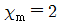
, 자속밀도 B=20yax(Wb/m2)인 균일 물체가 있다. 자계의 세기 H는 약 몇 AT/m 인가?- 0.53 × 107 yax
- 0.13 × 107 yax
- 0.53 × 107 xay
- 0.13 × 107 xay
(정답률: 56%)
6. 맥스웰 전자방정식에 대한 설명으로 틀린 것은?
- 폐곡면을 통해 나오는 전속은 폐곡면 내의 전하량과 같다.
- 폐곡면을 통해 나오는 자속은 폐곡면 내의 자극의 세기와 같다.
- 폐곡선에 따른 전계의 선적분은 폐곡선 내를 통하는 자속의 시간 변화율과 같다.
- 폐곡선에 따른 자계의 선적분은 폐곡선 내를 통하는 전류와 전속의 시간적 변화율을 더한 것과 같다.
(정답률: 52%)
7. 진공 중 반지름이 a(m)인 원형 도체판 2매를 사용하여 극판거리 d(m)인 콘덴서를 만들었다. 만약 이 콘덴서의 극판거리를 2배로 하고 정전용량은 일정하게 하려면 이 도체판의 반지름 a는 얼마로 하면 되는가?
- 2a
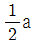
- √2 a
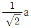
(정답률: 53%)
8. 비유전율 εr=5 인 유전체 내의 한 점에서 전계의 세기가 104 V/m라면, 이 점의 분극의 세기는 약 몇 C/m2인가?
- 3.5 × 10-7
- 4.3 × 10-7
- 3.5 × 10-11
- 4.3 × 10-11
(정답률: 64%)
9. 진공 중에 서로 떨어져 있는 두 도체 A, B가 있다. A에만 1C의 전하를 줄 때 도체 A, B의 전위가 각각 3V, 2V 였다고 하면, A에 2C, B에 1C의 전하를 주면 도체 A의 전위는 몇 V 인가?
- 6
- 7
- 8
- 9
(정답률: 53%)
10. 자기 인덕턴스 0.⑤H의 회로에 흐르는 전류가 매초 500A의 비율로 증가할 때 자기 유도기전력의 크기는 몇 V 인가?
- 2.5
- 25
- 100
- 1000
(정답률: 80%)
11. MKS 단위계에서 진공 유전율 값은?
- 4π × 10-7 H/m
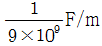
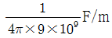
- 6.33 × 10-4 H/m
(정답률: 69%)
12. 원점 주위의 전류 밀도가
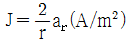
의 분포를 가질 때 반지름 5cm의 구면을 지나는 전 전류는 몇 A 인가?- 0.1 π
- 0.2 π
- 0.3 π
- 0.4 π
(정답률: 55%)
13. 유전체의 초전효과(pyroelectric effect)에 대한 설명이 아닌 것은?
- 온도변화에 관계없이 일어난다.
- 자발 분극을 가진 유전체에서 생긴다.
- 초전효과가 있는 유전체를 공기 중에 놓으면 중화된다.
- 열에너지를 전기에너지로 변화시키는 데 이용된다.
(정답률: 70%)
14. 권선수가 400회, 면적이 9π cm2인 장방형 코일에 1A의 직류가 흐르고 있다. 코일의 장방형 면과 평행한 방향으로 자속밀도가 0.8 Wb/m2 인 균일한 자계가 가해져 있다. 코일의 평행한 두 변의 중심을 연결하는 선을 축으로 할 때 이 코일에 작용하는 회전력은 약 몇 N·m 인가?
- 0.3
- 0.5
- 0.7
- 0.9
(정답률: 50%)
15. 점전하 +Q의 무한 평면도체에 대한 영상전하는?
- +Q
- -Q
- +2Q
- -2Q
(정답률: 84%)
16. 다음 조건 중 틀린 것은? (단,  : 비자화율, μr : 비투자율이다.)
: 비자화율, μr : 비투자율이다.)
- μr ≫ 1 이면 강자성체
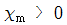
, μr ＜ 1 이면 상자성체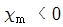
, μr ＜ 1 이면 반자성체- 물질은
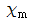
또는 μr 의 값에 따라 반자성체, 상자성체, 강자성체 등으로 구분한다.
(정답률: 74%)
17. 등전위면을 따라 전하 Q(C)를 운반하는 데 필요한 일은?
- 항상 0 이다.
- 전하의 크기에 따라 변한다.
- 전위의 크기에 따라 변한다.
- 전하의 극성에 따라 변한다.
(정답률: 79%)
18. 접지된 직교 도체 평면과 점전하 사이에는 몇 개의 영상 전하가 존재하는가?
- 1
- 2
- 3
- 4
(정답률: 64%)
19. 두 개의 코일에서 각각의 자기인덕턴스가 L1 = 0.35H, L2 = 0.5H이고, 상호인덕턴스는 M = 0.1H라고 하면 이때 코일의 결합계수는 약 얼마인가?
- 0.175
- 0.239
- 0.392
- 0.586
(정답률: 72%)
20. 두 종류의 유전체 경계면에서 전속과 전기력선이 경계면에 수직으로 도달할 때에 대한 설명으로 틀린 것은?
- 전속밀도는 변하지 않는다.
- 전속과 전기력선은 굴절하지 않는다.
- 전계의 세기는 불연속적으로 변한다.
- 전속선은 유전율이 작은 유전체 쪽으로 모이려는 성질이 있다.
(정답률: 69%)
2과목: 전력공학
21. 화력발전소의 기본 사이클이다. 그 순서로 옳은 것은?
- 급수펌프 → 과열기 → 터빈 → 보일러 → 복수기 → 급수펌프
- 급수펌프 → 보일러 → 과열기 → 터빈→ 복수기 → 급수펌프
- 보일러 → 급수펌프 → 과열기 → 복수기 → 급수펌프 → 보일러
- 보일러 → 과열기 → 복수기 → 터빈 → 급수펌프 → 축열기 → 과열기
(정답률: 74%)
22. 저압뱅킹 배전방식에서 저전압 측의 고장에 의하여 건전한 변압기의 일부 또는 전부가 차단되는 현상은?
- 아킹(Arcing)
- 플리커(Flicker)
- 밸런서(Balancer)
- 캐스케이딩(Cascading)
(정답률: 77%)
23. 증기의 엔탈피(Enthalpy)란?
- 증기 1kg의 잠열
- 증기 1kg의 기화 열량
- 증기 1kg의 보유 열량
- 증기 1kg의 증발열을 그 온도로 나눈 것
(정답률: 65%)
24. 그림에서 X부분에 흐르는 전류는 어떤 전류인가?
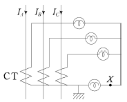
- b상 전류
- 정상전류
- 역상전류
- 영상전류
(정답률: 79%)
25. 지름 5mm의 경동선을 간격 1m로 정삼각형 배치를 한 가공전선 1선의 작용 인덕턴스는 약 몇 mH/km 인가? (단, 송전선은 평형 3상 회로)
- 1.13
- 1.25
- 1.42
- 1.55
(정답률: 56%)
26. 직류송전방식의 장점은?
- 역률이 항상 1 이다.
- 회전자계를 얻을 수 있다.
- 전력 변환장치가 필요하다.
- 전압의 승압, 강압이 용이하다.
(정답률: 65%)
27. 송전선로의 후비 보호 계전 방식의 설명으로 틀린 것은?
- 주 보호 계전기가 그 어떤 이유로 정지해 있는 구간의 사고를 보호한다.
- 주 보호 계전기에 결함이 있어 정상 동작을 할 수 없는 상태에 있는 구간 사고를 보호한다.
- 차단기 사고 등 주 보호 계전기로 보호할 수 없는 장소의 사고를 보호한다.
- 후비 보호 계전기의 정정값은 주 보호 계전기와 동일하다.
(정답률: 63%)
28. 최대 수용전력의 합계와 합성 최대 수용전력의 비를 나타내는 계수는?
- 부하율
- 수용률
- 부등률
- 보상률
(정답률: 68%)
29. 주파수 60Hz, 정전용량
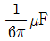
의 콘덴서를 △결선해서 3상전압 20,000V를 가했을 때의 충전용량은 몇 kVA 인가?- 12
- 24
- 48
- 50
(정답률: 55%)
30. 3상 3선식 3각형 배치의 송전선로에 있어서 각 선의 대지정전용량이 0.5038 μF이고, 선간 정전용량이 0.1237 μF일 때 1선의 작용 정전용량은 약 몇 μF 인가?
- 0.6275
- 0.8749
- 0.9164
- 0.9755
(정답률: 69%)
31. 지상 역률 80%, 10,000 kVA의 부하를 가진 변전소에 6,000 kVA의 콘덴서를 설치하여 역률을 개선하면 변압기에 걸리는 부하[kVA]는 콘덴서 설치 전의 몇 % 로 되는가?
- 60
- 75
- 80
- 85
(정답률: 52%)
32. 가공지선을 설치하는 주된 목적은?
- 뇌해 방지
- 전선의 진동 방지
- 철탑의 강도 보강
- 코로나의 발생 방지
(정답률: 77%)
33. 송전 계통의 안정도를 증진시키는 방법은?
- 중간 조상설비를 설치한다.
- 조속기의 동작을 느리게 한다.
- 계통의 연계는 하지 않도록 한다.
- 발전기나 변압기의 직렬 리액턴스를 가능한 크게 한다.
(정답률: 72%)
34. 보일러 절탄기(economizer)의 용도는?
- 증기를 과열한다.
- 공기를 예열한다.
- 석탄을 건조한다.
- 보일러 급수를 예열한다.
(정답률: 61%)
35. 345 kV 송전계통의 절연협조에서 충격 절연내력의 크기순으로 나열한 것은?
- 선로애자 ＞ 차단기 ＞ 변압기 ＞ 피뢰기
- 선로애자 ＞ 변압기 ＞ 차단기 ＞ 피뢰기
- 변압기 ＞ 차단기 ＞ 선로애자 ＞ 피뢰기
- 변압기 ＞ 선로애자 ＞ 차단기 ＞ 피뢰기
(정답률: 65%)
36. 전선에서 전류의 밀도가 도선의 중심으로 들어갈수록 작아지는 현상은?
- 표피효과
- 근접효과
- 접지효과
- 페란티효과
(정답률: 78%)
37. 차단기의 정격차단시간을 설명 한 것으로 옳은 것은?
- 계기용변성기로부터 고장전류를 감지한 후 계전기가 동작할 때까지의 시간
- 차단기가 트립 지령을 받고 트립 장치가 동작하여 전류 차단을 완료할 때까지의 시간
- 차단기의 개극(발호)부터 이동 행정 종료 시까지의 시간
- 차단기 가동접촉자 시동부터 아크 소호가 완료될 때까지의 시간
(정답률: 70%)
38. 연가를 하는 주된 목적은?
- 미관상 필요
- 전압강하 방지
- 선로정수의 평형
- 전선로의 비틀림 방지
(정답률: 82%)
39. 변압기의 보호방식 에서 차동계전기는 무엇에 의하여 동작하는가?
- 1, 2차 전류의 차로 동작한다.
- 전압과 전류의 배수 차로 동작한다.
- 정상전류와 역상전류의 차로 동작한다.
- 정상전류와 영상전류의 차로 동작한다.
(정답률: 68%)
40. 보호 계전 방식의 구비 조건이 아닌 것은?
- 여자돌입전류에 동작할 것
- 고장 구간의 선택 차단을 신속 정확하게 할 수 있을 것
- 과도 안정도를 유지하는 데 필요한 한도 내의 동작 시한을 가질 것
- 적절한 후비 보호 능력이 있을 것
(정답률: 66%)
3과목: 전기기기
41. 자극수 4, 전기자 도체수 50, 전기자저항 0.1Ω의 중권 타여자전동기가 있다. 정격전압 1⑤V, 정격전류 50A로 운전하던 것을 전압 106V 및 계자회로를 일정히 하고 무부하로 운전했을 때 전기자전류가 10A이라면 속도변동률(%)은? (단, 매극의 자속은 0.⑤Wb라 한다.)
- 3
- 5
- 6
- 8
(정답률: 47%)
42. 동기발전기의 권선을 분포권으로 하면?
- 난조를 방지한다.
- 파형이 좋아진다.
- 권선의 리액턴스가 커진다.
- 집중권에 비하여 합성 유도 기전력이 높아진다.
(정답률: 69%)
43. 직류 분권발전기가 운전 중 단락이 발생하면 나타나는 현상으로 옳은 것은?
- 과전압이 발생한다.
- 계자저항선이 확립된다.
- 큰 단락전류로 소손된다.
- 작은 단락전류가 흐른다.
(정답률: 51%)
44. 단락비가 큰 동기발전기에 대한 설명 중 틀린 것은?
- 효율이 나쁘다.
- 계자전류가 크다.
- 전압변동률이 크다.
- 안정도와 선로 충전용량이 크다.
(정답률: 50%)
45. 어떤 변압기의 부하역률이 60%일 때 전압변동률이 최대라고 한다. 지금 이 변압기의 부하역률이 100%일 때 전압변동률을 측정 했더니 3%였다. 이 변압기의 부하역률이 80% 일 때 전압변동률은 몇 % 인가?
- 2.4
- 3.6
- 4.8
- 5.0
(정답률: 45%)
46. 직류발전기에서 기하학적 중성축과 각도 θ만큼 브러시의 위치가 이동되었을 감자기자력(AT/극)은? (단,
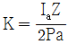
)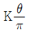
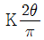
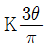
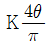
(정답률: 65%)
47. 동기 주파수변환기의 주파수 f1 및 f2 계통에 접속되는 양극을 P1, P2 라 하면 다음 어떤 관계가 성립되는가?
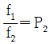
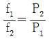
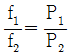
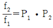
(정답률: 75%)
48. 다음은 직류 발전기의 정류곡선이다. 이 중에서 정류 말기에 정류의 상태가 좋지 않은 것은?
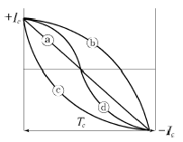
- ⓐ
- ⓑ
- ⓒ
- ⓓ
(정답률: 68%)
49. 직류전압의 맥동률이 가장 작은 정류회로는? (단, 저항부하를 사용한 경우이다.)
- 단상전파
- 단상반파
- 3상반파
- 3상전파
(정답률: 61%)
50. 권선형 유도전동기의 저항제어법의 장점은?
- 부하에 대한 속도변동이 크다.
- 역률이 좋고, 운전효율이 양호하다.
- 구조가 간단하며, 제어조작이 용이하다.
- 전부하로 장시간 운전하여도 온도 상승이 적다.
(정답률: 68%)
51. 권선형 유도전동기에서 비례추이를 할 수 없는 것은?
- 토크
- 출력
- 1차 전류
- 2차 전류
(정답률: 65%)
52. 직류 직권전동기의 속도제어에 사용되는 기기는?
- 초퍼
- 인버터
- 듀얼 컨버터
- 사이클로 컨버터
(정답률: 72%)
53. 6극 유도전동기 의 고정자 슬롯(slot)홈 수가 36이라면 인접한 슬롯 사이의 전기각은?
- 30˚
- 60˚
- 120˚
- 180˚
(정답률: 47%)
54. 그림은 복권발전기의 외부특성곡선이다. 이 중 과복권을 나타내는 곡선은?
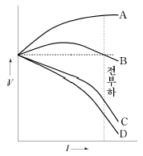
- A
- B
- C
- D
(정답률: 74%)
55. 누설 변압기에 필요한 특성은 무엇인가?
- 수하특성
- 정전압특성
- 고저항특성
- 고임피던스특성
(정답률: 64%)
56. 단상변압기 3대를 이용하여 △-△ 결선하는 경우에 대한 설명으로 틀린 것은?
- 중성점을 접지할 수 없다.
- Y-Y결선에 비해 상전압이 선간전압의 1/√3 배이므로 절연이 용이하다.
- 3대 중 1대에서 고장이 발생하여도 나머지 2대로 V결선하여 운전을 계속할 수 있다.
- 결선 내에 순환전류가 흐르나 외부에는 나타나지 않으므로 통신장애에 대한 염려가 없다.
(정답률: 65%)
57. 직류전동기의 속도제어 방법에서 광범위한 속도제어가 가능하며, 운전효율이 가장 좋은 방법은?
- 계자제어
- 전압제어
- 직렬 저항제어
- 병렬 저항제어
(정답률: 72%)
58. 200V의 배전선 전압을 220V로 승압하여 30kVA의 부하에 전력을 공급하는 단권변압기가 있다. 이 단권변압기의 자기용량은 약 몇 kVA 인가?
- 2.73
- 3.55
- 4.26
- 5.25
(정답률: 52%)
59. 동기발전기의 단락시험, 무부하시험에서 구할 수 없는 것은?
- 철손
- 단락비
- 동기리액턴스
- 전기자 반작용
(정답률: 58%)
60. 유도전동기에서 공간적으로 본 고정자에 의한 회전자계와 회전자에 의한 회전자계는?
- 항상 동상으로 회전한다.
- 슬립만큼의 위상각을 가지고 회전한다.
- 역률각만큼의 위상각을 가지고 회전한다.
- 항상 180˚만큼의 위상각을 가지고 회전한다.
(정답률: 53%)
4과목: 회로이론
61. f(t)=e-t+3t2+3cos2t+5 의 라플라스 변환식은?
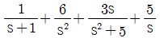
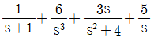
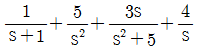
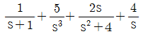
(정답률: 68%)
62. 그림의 회로에서 전류 I 는 약 몇 A 인가? (단, 저항의 단위는 Ω 이다.)
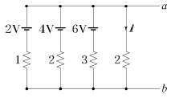
- 1.125
- 1.29
- 6
- 7
(정답률: 51%)
63. 구형파의 파형률(㉠)과 파고율(㉡)은?
- ㉠ 1, ㉡ 0
- ㉠ 1.11, ㉡ 1.414
- ㉠ 1, ㉡ 1
- ㉠ 1.57, ㉡ 2
(정답률: 73%)
64. a-b 단자의 전압이 50∠0˚ (V), a-b단자에서 본 능동 회로망(N)의 임피던스가 Z=6+j8(Ω)일 때, a-b 단자에 임피던스 Z′=2-j2(ohm)를 집속하면 이 임피던스에 흐르는 전류(A)는?
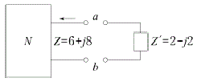
- 3 - j4
- 3 + j4
- 4 - j3
- 4 + j3
(정답률: 51%)
65. 3상 평형회로에서 선간전압이 200V 이고 각 상의 임피던스가 24+j7(Ω)인 Y결선 3상 부하의 유효전력은 약 몇 W 인가?
- 192
- 512
- 1536
- 4608
(정답률: 55%)
66.
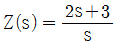
로 표시되는 2단자 회로망은?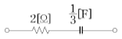
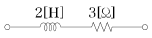
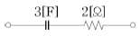
(정답률: 66%)
67.
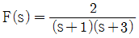
의 역라플라스 변환은?- e-t - e-3t
- e-t - e3t
- et - e3t
- et - e-3t
(정답률: 67%)
68. 그림과 같은 회로의 영상 임피던스 Z01, Z02(Ω)는 각각 얼마인가?
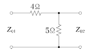
- 9, 5
- 6, 10/3
- 4, 5
- 4, 20/9
(정답률: 44%)
69. e1=6√2 sinωt(V), e2=4√2 sin(ωt-60°) (V) 일 때, e1-e2 의 실효값(V)은?
- 4
- 2√2
- 2√7
- 2√13
(정답률: 56%)
70. 기본파의 60% 인 제3고조파와 80% 인 제5고조파를 포함하는 전압의 왜형률은?
- 0.3
- 1
- 5
- 10
(정답률: 64%)
71. 인덕턴스가 각각 5H, 3H인 두 코일을 모두 dot 방향으로 전류가 흐르게 직렬로 연결하고 인덕턴스를 측정하였더니 15H이었다. 두 코일간의 상호 인덕턴스(H)는?
- 3.5
- 4.5
- 7
- 9
(정답률: 60%)
72. 1상의 직렬 임피던스가 R = 6Ω, XL = 8Ω인 △결선의 평형부하가 있다. 여기에 선간전압 100V인 대칭 3상 교류전압을 가하면 선전류는 몇 A 인가?
- 3√3
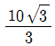
- 10
- 10√3
(정답률: 66%)
73. RL 직렬회로에서 시정수의 값이 클수록 과도현상은 어떻게 되는가?
- 없어진다.
- 짧아진다.
- 길어진다.
- 변화가 없다.
(정답률: 62%)
74. 대칭 6상 전원이 있다. 환상결선으로 각 전원이 150A의 전류를 흘린다고 하면 선전류는 몇 A 인가?
- 50
- 75
- 150 / √3
- 150
(정답률: 52%)
75. RLC 직렬회로에서 R=100Ω, L=5mH, C=2μF 일 때 이 회로는?
- 과제동이다.
- 무제동이다.
- 임계제동이다.
- 부족제동이다.
(정답률: 60%)
76.
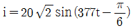
의 주파수는 약 몇 Hz 인가?- 50
- 60
- 70
- 80
(정답률: 75%)
77. 그림과 같은 회로의 전압 전달함수 G(s) 는?
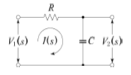
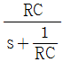
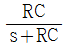
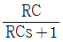
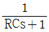
(정답률: 59%)
78. 평형 3상 부하에 전력을 공급할 때 선전류가 20A이고 부하의 소비전력이 4kW 이다. 이 부하의 등가 Y회로에 대한 각 상의 저항은 약 몇 Ω 인가?
- 3.3
- 5.7
- 7.2
- 10
(정답률: 40%)
79. f(t)=eat의 라플라스 변환은?
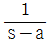
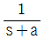
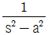
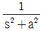
(정답률: 60%)
80. 그림과 같은 평형 3상 Y 결선에서 각 상이 8Ω의 저항과 6Ω의 리액턴스가 직렬로 연결된 부하에 선간전압 100√3 (V)가 공급되었다. 이때 선전류는 몇 A 인가?
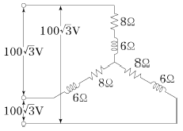
- 5
- 10
- 15
- 20
(정답률: 65%)
5과목: 전기설비기술기준 및 판단 기준
81. 저압 옥내배선과 옥내 저압용의 전구선의 시설방법으로 틀린 것은?(문제 오류로 실제 시험에서는 2,4번이 정답처리 되었습니다. 여기서는 2번을 누르면 정답 처리 됩니다.)
- 쇼케이스 내의 배선에 0.75mm2의 캡타이어케이블을 사용하였다.
- 출퇴표시등용 전선으로 1.0mm2의 연동선을 사용하여 금속관에 넣어 시설하였다.
- 전광표시장치의 배선으로 1.5mm2의 연동선을 사용하고 합성수지관에 넣어 시설하였다.
- 조영물에 고정시키지 아니하고 백열전등에 이르는 전구선으로 0.55mm2의 케이블을 사용하였다.
(정답률: 67%)
82. 사용전압이 20kV인 변전소에 울타리·담 등을 시설하고자 할 때 울타리·담 등의 높이는 몇 m 이상이어야 하는가?
- 1
- 2
- 5
- 6
(정답률: 51%)
83. 최대사용전압 440V인 전동기의 절연내력 시험전압은 몇 V 인가?
- 330
- 440
- 500
- 660
(정답률: 60%)
84. 고압 옥내배선을 애자사용 공사로 하는 경우, 전선의 지지점간의 거리는 전선을 조영 재의 면을 따라 붙이는 경우 몇 m 이하이어야 하는가?
- 1
- 2
- 3
- 5
(정답률: 49%)
85. 특고압 가공전선로의 지지물에 시설하는 통신선 또는 이것에 직접 접속하는 통신선일 경우에 설치하여야 할 보안 장치로서 모두 옳은 것은?
- 특고압용 제2종 보안장치, 고압용 제2종 보안장치
- 특고압용 제1종 보안장치, 특고압용 제3종 보안장치
- 특고압용 제2종 보안장치, 특고압용 제3종 보안장치
- 특고압용 제1종 보안장치, 특고압용 제2종 보안장치
(정답률: 50%)
86. 사용전압 60000V인 특고압 가공전선과 지지물·지주·완금류 또는 지선 사이의 이격거리는 몇 cm 이상이어야 하는가?
- 35
- 40
- 45
- 65
(정답률: 48%)
87. 특고압 가공전선로에서 발생 하는 극저주파 전자계는 지표상 1m 에서 전계가 몇 kV/m 이하가 되도록 시설하여야 하는가?
- 3.5
- 2.5
- 1.5
- 0.5
(정답률: 36%)
88. 동일 지지물에 저압 가공전선(다중접지된 중성선은 제외)과 고압 가공전선을 시설하는 경우 저압 가공전선은?
- 고압 가공전선의 위로 하고 동일 완금류에 시설
- 고압 가공전선과 나란하게 하고 동일 완금류에 시설
- 고압 가공전선의 아래로 하고 별개의 완금류에 시설
- 고압 가공전선과 나란하게 하고 별개의 완금류에 시설
(정답률: 69%)
89. 23kV 특고압 가공전선로의 전로와 저압전로를 결합한 주상변압기의 2차측 접지선의 굵기는 공칭단면적이 몇 mm2 이상의 연동선인가? (단, 특고압 가공전선로는 중성선 다중접지식의 것을 제외한다.)(2021년 변경된 KEC 규정 적용됨)
- 2.5
- 6
- 10
- 16
(정답률: 36%)
90. 특고압 가공전선로의 지지물 양쪽의 경간의 차가 큰 곳에 사용되는 철탑은?
- 내장형철탑
- 인류형철탑
- 각도형철탑
- 보강형철탑
(정답률: 73%)
91. 철탑의 강도 계산에 사용하는 이상 시 상정 하중의 종류가 아닌 것은?
- 좌굴하중
- 수직하중
- 수평횡하중
- 수평종하중
(정답률: 71%)
92. 교류 전차선 등이 교량 등의 밑에 시설되는 경우 교량의 가더 등의 금속제 부분에는 제 몇 종 접지공사를 하여야 하는가?(관련 규정 개정전 문제로 여기서는 기존 정답인 3번을 누르면 정답 처리됩니다. 자세한 내용은 해설을 참고하세요.)
- 제1종 접지공사
- 제2종 접지공사
- 제3종 접지공사
- 특별 제3종 접지공사
(정답률: 61%)
93. 사용전압 15kV 이하인 특고압 가공전선로의 중성선 다중 접지시설은 각 접지선을 중성 선으로부터 분리하였을 경우 1km 마다의 중성선과 대지사이의 합성 전기저항값은 몇 Ω 이하이어야 하는가?
- 30
- 50
- 400
- 500
(정답률: 52%)
94. 고압 가공전선에 케이블을 사용하는 경우의 조가용선 및 케이블의 피복에 사용하는 금속체에는 몇 종 접지공사를 하여야 하는가?(관련 규정 개정전 문제로 여기서는 기존 정답인 3번을 누르면 정답 처리됩니다. 자세한 내용은 해설을 참고하세요.)
- 제1종 접지공사
- 제2종 접지공사
- 제3종 접지공사
- 특별 제3종 접지공사
(정답률: 58%)
95. 강색 차선의 레일면상의 높이는 몇 m 이상이어야 하는가? (단, 터널 안, 교량 아래 그 밖에 이와 유사한 곳에 시설하는 경우는 제외한다.)(오류 신고가 접수된 문제입니다. 반드시 정답과 해설을 확인하시기 바랍니다.)
- 2.5
- 3.0
- 3.5
- 4.0
(정답률: 31%)
96. “지중 관로”에 포함되지 않는 것은?
- 지중 전선로
- 지중 레일 선로
- 지중 약전류 전선로
- 지중 광섬유 케이블 선로
(정답률: 61%)
97. 수소냉각식의 발전기·조상기에 부속하는 수소 냉각 장치에서 필요 없는 장치는?
- 수소의 압력을 계측하는 장치
- 수소의 온도를 계측하는 장치
- 수소의 유량을 계측하는 장치
- 수소의 순도 저하를 경보하는 장치
(정답률: 61%)
98. 고압 가공 전선이 경동선 또는 내열동합금선인 경우 안전율의 최소값은?
- 2.0
- 2.2
- 2.5
- 4.0
(정답률: 52%)
99. 전체의 길이가 16m 이고 설계하중이 6.8kN 초과 9.8kN 이하인 철근 콘크리트주를 논, 기타 지반이 연약한 곳 이외의 곳에 시설할 때, 묻히는 깊이를 2.5m 보다 몇 cm 가산하여 시설하는 경우에는 기초의 안전율에 대한 고려 없이 시설하여도 되는가?
- 10
- 20
- 30
- 40
(정답률: 58%)
100. 저압 및 고압 가공전선의 높이에 대한 기준으로 틀린 것은?
- 철도를 횡단하는 경우는 레일면상 6.5m 이상이다.
- 횡단 보도교 위에 시설하는 경우 저압 가공전선은 노면상에서 3m 이상이다.
- 횡단 보도교 위에 시설하는 경우 고압 가공전선은 그 노면 상에서 3.5m 이상이다.
- 다리의 하부 기타 이와 유사한 장소에 시설하는 저압의 전기철도용 급전선은 지표상 3.5m 까지로 감할 수 있다.
(정답률: 44%)